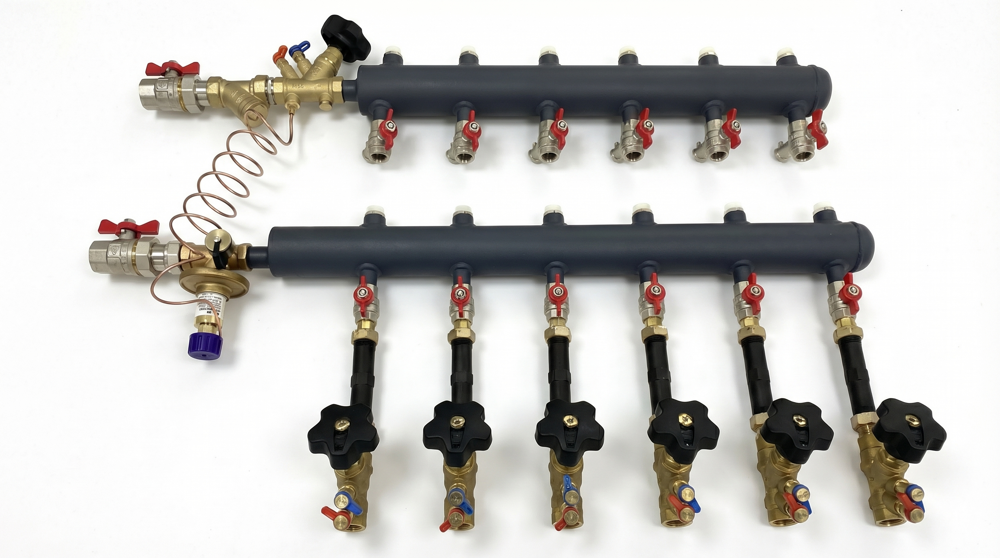
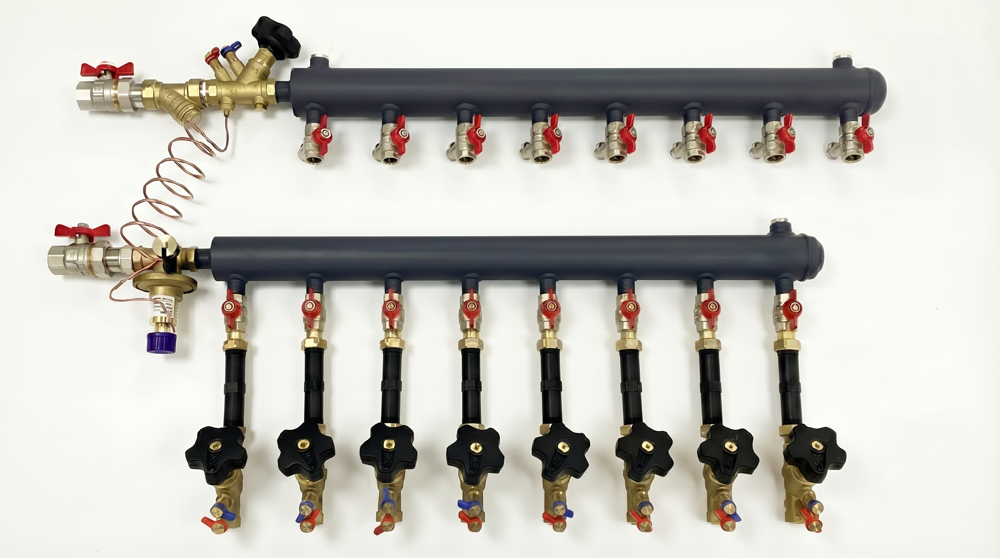
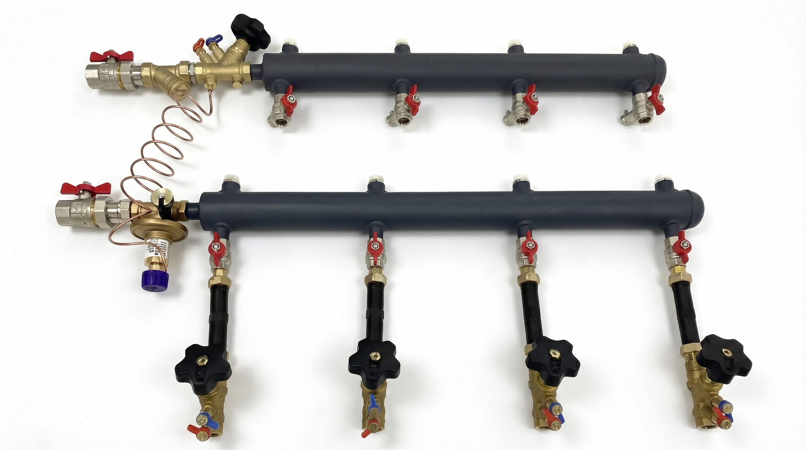
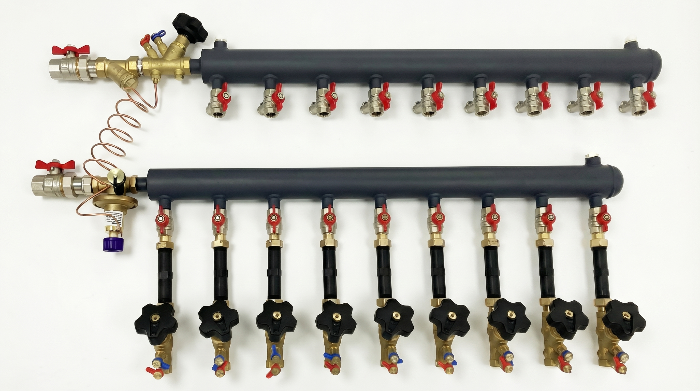
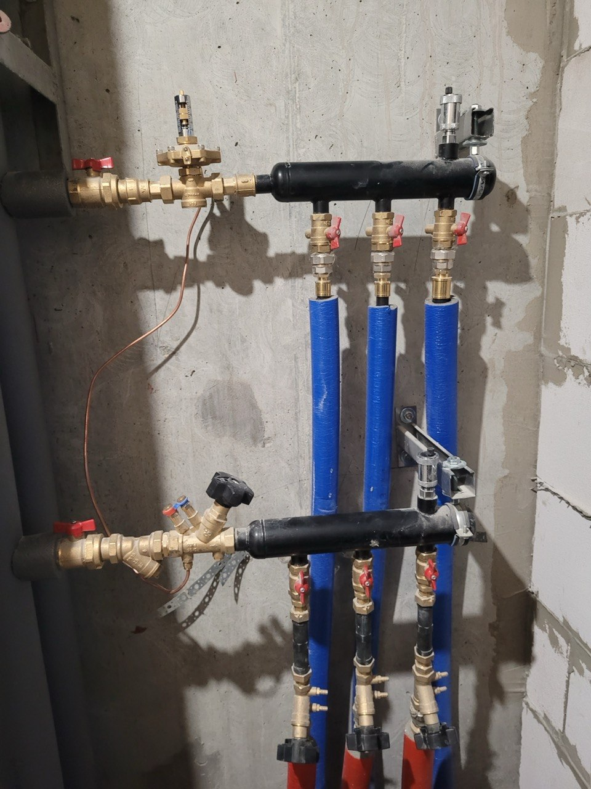
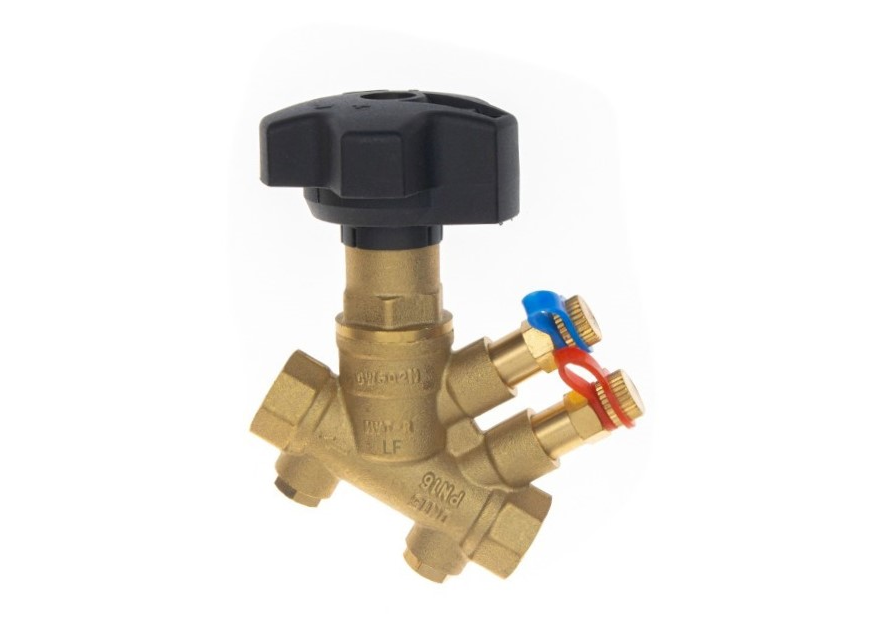

Заводская сборка
Узлы поставляются в собранном виде и готовы к дальнейшему монтажу на объекте.
Готовое решение для многоквартирных жилых домов с двухтрубной горизонтальной разводкой систем отопления и водоснабжения. Узлы поставляются в собранном виде и проходят опрессовку.

Ниже только те тезисы, которые уже подтверждены материнской страницей TES и локальными материалами проекта.
Узлы поставляются в собранном виде и готовы к дальнейшему монтажу на объекте.
Каждое изделие проходит опрессовку при 15 бар до поставки.
Система рассчитана для поддержания заданных гидравлических параметров.
Поддерживается возможность диспетчеризации и дальнейшей интеграции учета.
Предусмотрены операции выпуска воздуха, дренажа и отключения потребителя или узла.
В проекте уже подтверждены разные конфигурации UDFC под диаметр и количество отводов.
Обе ветки подтверждены локальными DOCX-материалами проекта. Ниже только краткая рабочая сводка.
Подключение квартирных систем отопления к централизованному источнику, поддержание гидравлических параметров и возможность поэтапного ввода потребителей в эксплуатацию.
Распределение и учет холодной и горячей воды по отдельным потребителям с возможностью подключения и отключения отдельных веток.
Решение ориентировано на многоквартирные жилые дома с двухтрубной горизонтальной разводкой инженерных систем.
На этом этапе сайт использует только локально подтвержденные модели. Точные чертежи и размеры открываются через PDF по выбранной позиции.
Для сайта на этом этапе сохраняются только подтвержденные коды моделей. Все точные размеры, состав и чертежи открываются из PDF по выбранной позиции.
Общие подтвержденные параметры семейства: рабочее давление 10 бар, опрессовка 15 бар, максимальная рабочая температура 90 °C, диапазон отводов 2–10.
PDF привязан: UDFC-40-2R-25-25M-E-15-HНиже использованы реальные изображения из проектной подборки: общий вид, дополнительные ракурсы, фото на объекте и отдельная деталь.

Дополнительный общий ракурс изделия на белом фоне.

Вариант конфигурации для продуктового блока.

Широкий ракурс для дополнительной галереи.

Фото изделия на объекте для блока применения.
Ниже общие параметры семейства UDFC, которые уже подтверждены материнской страницей TES и локальными проектными материалами.
Рабочее давление — 10 бар. Испытательное давление — 15 бар.
Максимальная рабочая температура — 90 °C.
Подтвержденный диапазон по семейству — от 2 до 10 отводов.
Диапазон поддержания перепада давления — 5–30 кПа.
Подтвержденные значения — 50 / 100 / 150 мм.
В проектных материалах подтверждены Сталь 20 и AISI 304.

Отдельный компонент из проектного набора изображений.
Сайт уже привязан к 6 локальным PDF. Это рабочая база под дальнейшую расширенную версию с формой заявки и детальным модельным блоком.
Подтвержденный PDF по модели.
Открыть PDFПодтвержденный PDF по модели.
Открыть PDFПодтвержденный PDF по модели.
Открыть PDFПодтвержденный PDF по модели.
Открыть PDFПодтвержденный PDF по модели.
Открыть PDFПодтвержденный PDF по модели.
Открыть PDF